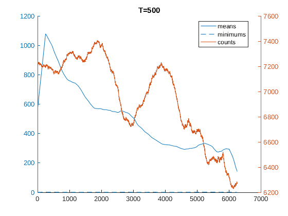
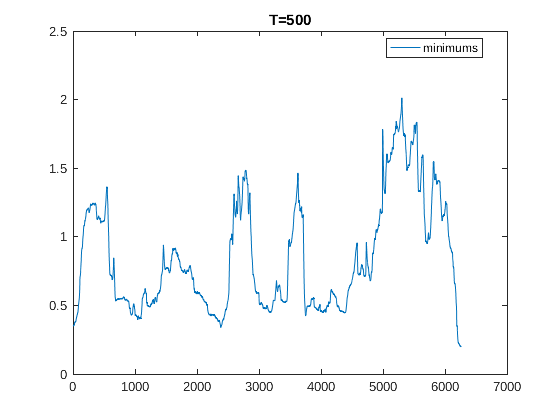
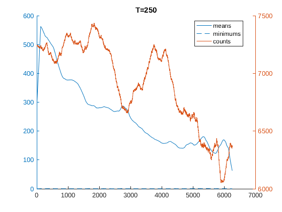
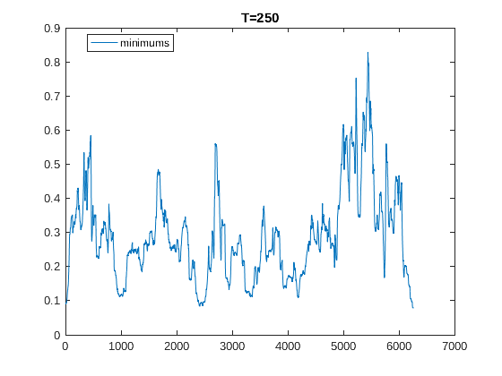
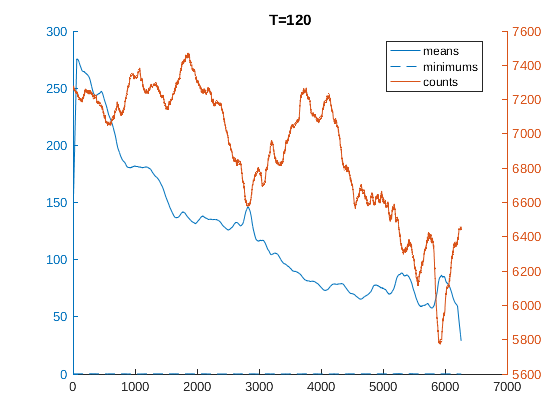
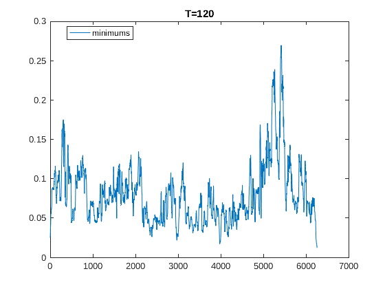

Diplomski rad
Contents
addpath functions
Učitavanje podataka
sp500 = csvread('data/stock_prices_sp500.csv');
sp500_returns = price2ret(sp500);
sp500_logprice = log(sp500);
[days, N] = size(sp500);
graph_xy = [cos((1 : N) / N * 2 * pi).', sin((1 : N) / N * 2 * pi).'];
Minimizacija kvadrata razlike logaritma cijene
Ts = [500, 250, 120];
for T = Ts
L = days;
squared_logprice_diff = nan(L, N, N);
parfor i = 1 : N
squares_t = nan(L, N);
for j = i + 1 : N
squares_t(:, j) = (sp500_logprice(:, i) - sp500_logprice(:, j)) .^ 2;
end
squared_logprice_diff(:, i, :) = squares_t;
end
accum_squared_logprice_diff = movsum(squared_logprice_diff, T);
clear squared_logprice_diff
nanmeans = nanmean(nanmean(permute(accum_squared_logprice_diff, [3, 2, 1])));
mins = min(min(permute(accum_squared_logprice_diff, [3, 2, 1])));
counts = sum(sum(permute(accum_squared_logprice_diff, [3, 2, 1]) > nanmeans));
figure, hold on
yyaxis left, plot(nanmeans(:)), plot(mins(:))
yyaxis right, plot(counts(:))
legend means minimums counts Location best
title(sprintf('T=%d', T))
figure, plot(mins(:))
legend minimums Location best
title(sprintf('T=%d', T))
end
     